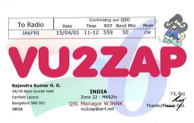
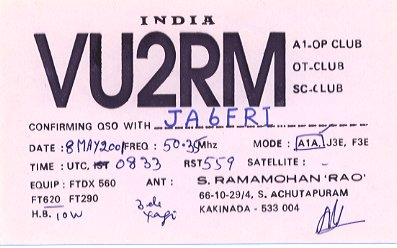
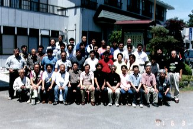

50.350MHzで良く入感しているVU2ZAP
QSLはMgrのW3HNKに送るのが安全！

【 Back Issues Jun.2001】 TIME:UTC(JST-09:00) Report from JA1RJU (PM95sq)
30.Jun.2001(15:00f) *BY-TV 00:00- 49.750 -- *9M-TV 00:00- 48.240/260 -- JD1BIA 02:15 50.130 SSB Haha jima HL3ERJ 08:15 50.120 SSB *VK-TV 08:20- 46.172/240 -- HL2WP 08:24 50.137 SSB KH0/JA1RIZ 08:29 50.135 CW VK4JH 08:54 50.110 CW VK4CH 09:00 50.110 CW DS5ISO 09:05 50.135 CW HL2JFM 09:28 50.115 SSB VK6RSX 09:55- 50.304 CW Beacon *??-TV 12:00- 48.250 -- QTF 300 (9A3FT 13:29- 50.103/110 CW JA6=PM42 & 52) HL1KTX 14:45 50.110 CW
| ◎ 夜間に約300度の方向から48.250MHzのTVが入感しているが、 今夜はこの時間帯にJA6など西日本から9A3FT(Rep.Kroatia=JN83)とのQSOがリポートされている。 I(Italy)からもJAの入感がリポートされていたが、6月14日に続き今夜も東日本は"蚊帳(かや)の外"。 |
29.Jun.2001(15:00e) *BY-TV 00:00- 49.750 -- *VK-TV 08:30- 46.172 -- *??-TV 12:00- 48.250 -- QTF 310
| ◎ 昨日は夕方から夜間にかけてVK6/P29のBeaconが入感していたが、今日は西方向からのバズと、 夕方に短時間VKのTVが上昇。 12:00z前後に北西方向(約310度)から48.250MHzのTV(Video)が入感していた。 1エリアでは残念ながらこの時間には50MHz帯でのDX入感は確認されなかったが、 JA2、9エリアなどからUN1SIX(Kazakhstan)のBeaconの入感がリポートされている。 |
28.Jun.2001(15:00e)
*BY-TV 00:00- 49.750 --
*VK-TV 08:00- 46.172/240 --
*ZL-TV 08:30- 45.250 --
VK6RSX 09:00- 50.304 CW Beacon
P29BPL 11:50- 50.029 CW Beacon
27.Jun.2001(15:00d)
*BY-TV 00:00- 49.750 --
| ◎ 大陸方面から49.750MHzが強力に入感しているだけで50MHz帯のDXは何も聞こえない。 梅雨の晴れ間、関東地方は真夏なみの暑さが続いている。 |
26.Jun.2001(15:00e)
*BY-TV 00:00- 49.750 --
BD4ABC 07:23 50.110 SSB
BD4ABC 08:07 50.110 SSB
BV4QI 09:34 50.110 SSB
| ◎ 終日、西方向からのバズが強力。日中のコンデションはBD4ABCが頻繁に入感していた程度。 |

25.Jun.2001(15:00d)
*VK-TV 00:00- 46.172/240 --
JQ1SYQ/JD1 03:46 50.110 CW
*BY-TV 04:00- 49.750 --
| ◎ 午前中にVKのTVが短時間上昇。日中は昨日とはうって変わって西方向からのバズも無い静かなコンデション。 |
24.Jun.2001(15:00g)
*BY-TV 23:00- 49.750 --
HL1KTX 23:40 50.110 CW
BG7OH 00:50 50.120 SSB
KH0/JA8CFK 00:50 50.120 CW
*9M-TV 01:00- 48.240/260 --
9M2/JI1ETU 01:00- 50.085 CW Beacon
JQ1SYQ/JD1 01:08 50.165 CW
VR2XMT 01:08 50.130 SSB QSO with RW0CD
KH0/JE1RRK 02:19 50.120 CW
VR2XMT 02:51 50.130 SSB
JM1MKB/JD1 02:55 50.200 SSB
(W/K's 05:25-06:05 CW JA2.3→PM84.85 etc.)
UN3G 06:14 50.110 CW
UN1SIX 06:25- 50.024 CW Beacon
JT1CO 07:20 50.100 SSB QSL Direct to QRZ.COM QTH
HL2KV 07:27 50.100/125 SSB
6K2BTX 07:30 50.130/135 SSB
HL2JFM 07:40 50.100 SSB
DS1BXX 07:50 50.100 SSB
DS2BGV 08:15 50.120 SSB
HL1/ON4MU 08:19 50.135 SSB
DS5MHE 08:28 50.117 SSB
HL1ACU 08:42 50.110/133 SSB
HL1/WX8C 08:45 50.125 SSB
| ◎ 午後から入感した北米はJA2、3エリアが中心で1エリアでは呼べるレベルではなかった。 入感がリポートされた局はN5JHV.K7CA.AA7A.K7FFなど。 この北米がフェードアウトした直後に入感してきたUN3G、JT1COは1エリアでも強力。 今日も終日韓国が賑やか。夜間のヨーロッパに期待！？。 |
23.Jun.2001(15:00f)
*BY-TV 00:00- 49.750 --
KH0/JQ1DSK 00:50 50.122 CW
BX2AB 01:28 50.115 SSB
BV4QI 01:47 50.130 SSB
KH0/JQ1DSK 04:15 50.121 SSB/CW
KH0/7K1PEO 06:25 50.120 CW/SSB
BV4VJ 06:44 50.125 SSB
VR2XMT 06:58 50.115 SSB
*9M-TV 08:00- 48.240/260 --
BD4ABC 08:08 50.110 SSB
XV3AA 08:09 50.130 SSB
KH0/JE1RRK 08:13 50.120 SSB
JQ1SYQ/JD1 08:14 50.220 CW
9M2TO/B 08:15- 50.005 CW Beacon
9M2/JI1ETU 08:15- 50.085 CW Beacon
VK4JH 08:51 50.110 CW
9M2/JI1ETU 09:20- 50.135 SSB
| ◎ 早朝から入感してきた太平洋方向(KH0)に続いて、午後から大陸方面のコンデションが上昇。 久しぶりに9M2'sが強力に入感。中東方面のパスの前兆となるJT(モンゴル)が入感して来ないのが淋しい。 |
22.Jun.2001(15:00e)
*BY-TV 01:00- 49.750 --
*9M-TV 01:00- 48.240/260 --
DS5MHE 10:14 50.117 SSB
BD4ABC 11:32 50.112 SSB
DS1MFC 11:55 50.125 SSB
DS5JQK 13:00 50.135 SSB
| ◎ 相変わらずEsによる国内のパスが夜間まで強力。頻繁に聞こえるJA6、HL/DSなど西方向のパスに比べ、 今シーズンはJA8の強力なEsがあまり聞こえないのは、KL7/北米本土などの北太平洋方面のパスの"不調"とも関連があるのかも？。 |
21.Jun.2001(15:00g)
*BY-TV 01:00- 49.750 --
*9M-TV 03:00- 48.240/260 --
9M2TO/B 03:55- 50.005 CW Beacon
DS1GQS 04:50 50.110/120 CW/SSB
BD4ABC 09:15 50.110 SSB
HL1/WX8C 09:35 50.110 SSB
HL2AMO 09:45 50.110 SSB
HL3IUA 09:49 50.110 SSB
HL3ERJ 09:55 50.130 SSB
HL5FSZ 12:17 50.190 SSB
HL1KTX 12:39 50.110 CW
| ◎ 午前中から西方向がオープン、Esによる国内のパスも終日強力。DXは韓国や中国など近場がバズと共に強力に入感。 北米、ヨーロッパ、中東方向からのマルチホップは現在"ひと休み中"だが、まだオープンの可能性は残っているので日中の北東、 夜間の西方向には要注意。 |
20.Jun.2001(15:00d)
*BY-TV 00:00- 49.750 --
JT1CO 10:24 50.110/104 CW/SSB
19.Jun.2001(15:00b)
*BY-TV 00:00- 49.750 --
18.Jun.2001(15:00d)
*BY-TV 00:00- 49.750 --
*9M-TV 03:00- 48.240/260 --
*VK-TV 09:45- 46.172 --
VK4CXQ 10:01 50.110 CW
P29ZTC 10:03 50.110 SSB
P29BPL 10:03- 50.029 CW Beacon
17.Jun.2001(15:00g)
*BY-TV 00:00- 49.750 --
*9M-TV 01:00- 48.240/260 --
BX2AB 02:28 50.110 CW
WH0C 03:13 50.110 CW
JQ1SYQ/JD1 03:17 50.158 CW/SSB
BG7OH 04:05 50.130 SSB
WH0C 06:00 50.110 CW
*VK-TV 08:00- 46.172 --
|
◎ 昨日(16日)も強力に入感したJY9NX・田原さんの情報(Homepage)によると、昨夜のJAは計169 QSO(SSB=75、CW=94)だったと。
SSBでも十分QSOが可能なコンデションなので今後は最初から50.140MHzでQRV、50.150-155MHzを聞くとのこと。
◎ 昨日(16日)のクラスターにリポートされていたSP3→JA6の"QSO"は、14日の交信に対する"情報交換"で、 昨日のオープンとは無関係だった事が確認された。 |
16.Jun.2001(16:00h)
*BY-TV 00:00- 49.750 --
HL5XF 03:13 50.120 CW
WH0C 06:43 50.110 CW
DS1GQS 06:55 50.110 SSB
JT1CO 07:50 50.104 CW/SSB
*9M-TV 08:00- 48.240/260 --
9M2TO/B 08:55 50.005 CW Beacon
JT1CO 09:50 50.103 CW/SSB
VR2BG 09:57 50.100 CW
(UN7QX 12:16 50.102 CW/SSB JA7)
JT1CO 12:20 50.103 CW/SSB
JY9NX 13:45 50.110/101 CW loud ! QSX 50.150MHz
OD5/OK1MU 13:58 50.106 CW
UN1SIX 14:03- 50.024 CW Beacon
UN3G 14:06 50.130 CW/SSB
4X1RF 14:12 50.090 CW QSX 5KHz UP
| ◎ 3日連続で西アジアから中近東がオープンした。 ただし、コンデションは相変わらずの"西高東低"で、1エリアでまともに聞こえていたのは、 JY9NX、UN'sぐらいで2エリアでパイルしているOD5/OK1MU、 4X1RFなどは呼べるレベルまで上昇しなかった。 |
15.Jun.2001(15:00h)
*BY-TV 00:00- 49.750 --
*9M-TV 00:00- 48.240/260 --
JT1CO 04:08 50.115 CW
DS2BGV 08:45 50.120 CW
HL1LTC 09:20 50.110 SSB
BD4ABC 09:21 50.110 SSB
DS5ISO 09:32 50.148 SSB
DS2IMV 09:41 50.190 SSB
DS2SUN 09:46 50.190 SSB
HL1/WX8C 11:00 50.135 SSB
JT1CO 11:08 50.112 SSB/CW
HL9MC 11:23 50.115/120 SSB
DS1MFC 11:23 50.115 SSB
HL1/ON4MU 12:07 50.132 SSB
UN5PR 12:12 50.113/110 SSB/CW
5B4FL 12:25 50.101 CW
JY9NX 12:43 50.098 CW QSX 50.148MHz
UN6P 12:55 50.110 CW UP 1KHz
14.Jun.2001(15:00e)
*BY-TV 00:00- 49.750 --
*9M-TV 00:00- 48.240/260 --
*VK-TV 01:00- 46.172 --
JT1CO 05:10 50.110 CW/SSB
(EU's 12:00-13:30 CW JA2-6.9)
UN3G 13:16 50.115 CW
UN3G 13:21 50.115 SSB
5B4FL 13:47 50.106 CW
|
◎ 北米の入感は無かったものの、日中はJT1COが強力に入感して西方向のコンデションの上昇が感じられた。
夜になって12:00z (21:00JST)頃から西日本を中心にヨーロッパがオープン、
一昨日の北米の入感に続くEsマルチホップで賑わった。残念ながら1エリアでまともに聞こえたのはUN3G、5B4FL止まり。 JAとEU's側からClusterにリポートされていた主な局は次の通り。 Eu= 9A8A. DL2NAB. DD3DJ. DL3AMA. DJ5RE. DL7QY. DK7ZB. ES1CW. GW8ASA HB9QQ. IS0GQX. OE1TKE. OH6QF. OK2KW. OZ2ZW. PA0HIP. S59A. SP3RNZ. SP8NCJ...etc. Asia= 5B4FL. JY9NX. UN3G |
13.Jun.2001(15:00e)
*BY-TV 00:00- 49.750 --
*9M-TV 00:00- 48.240/260 --
VR2HAM 00:55 50.110/105 CW
*VK-TV 08:30- 46.172/240 --
VK4WTN 08:36 50.110/130 SSB
|
◎ 午前中から南西方向のコンデションが上昇していたものの、今日は予想した通り２日続きの北米の入感はなかった。
比較的オープンの回数が多いと言われる北米方面でも、昨日の様なコンデションはシーズン中に2、3回経験出来れば良い方。
まして、Esによるマルチホップが連続してオープンする事は非常にまれ。 ヨーロッパ方面のマルチホップも伝搬としては"ゼロ"では無いので期待して良いのだが、 いずれにしても運良くオープン時に居合わせるかどうかがカギ。 Esのマルチホップは事前にコンデションの"予測が出来ない"ので難しい。 |
12.Jun.2001(15:00i)
*BY-TV 00:00- 49.750 --
N3WW/KH2 01:20 50.110 CW
NL7Z 02:34 50.130 SSB BP51
KL0BK 02:43 50.120 SSB BP62
K1HP/KH2 02:52 50.110 CW CQing
N3WW/KH2 03:00 50.110 CW CQing
NL7Z 03:08 50.130 CW BP51
KL9A 03:37 50.135 CW BP51
KL7IKV 03:40 50.105 CW BP51
W7USB 03:58 50.110 SSB DN17(Idaho)
NL7ZW 04:06 50.112 SSB BP71
WL7BHL 04:13 50.107 CW BP72
W7EW 04:33 50.103 CW CN84(Oregon)
K7AD 04:46 50.110 SSB DN06(Wash)
W7NBH 04:50 50.115 SSB CN96(Wash)
W7FHI 04:57 50.130 SSB CN96(Wash)
WA6PEV 05:07 50.137 SSB DM15(Nr Los.Cal)
W6KBX 05:17 50.137 SSB CM98(Nr San.Cal)
K6QXY 05:26 50.130 SSB CM88(Nr San.Cal)
K6KLY 05:31 50.120 SSB CM87(Nr San.Cal)
WF7I 05:32 50.098 CW DM43(Arizona)
W7EW 05:35 50.103 CW CN84(Oregon)
AA7A 05:38 50.107 SSB DM43(Arizona)
K7RAT 05:42 50.096 CW CN85(Oregon)
VE7AGG 05:46 50.091 CW CN89 F.out VE7 06:00z
(K6MYC 06:08 50.131 SSB DM06 F.out W6 Cal)
K7RAT 06:14 50.096 CW F.out W7 06:30z
*9M-TV 08:00- 48.240/260 --
9M2TO/B 08:50 50.005 CW
VK6JQ 09:15 50.110 CW
VK6RSX 09:20- 50.304 CW Beacon
DS3BGI 13:38 50.110 SSB
HL1KTX 13:42 50.110 SSB
BD4ABC 14:00 50.110 SSB
DS5JQK 14:11 50.144 CW
HL9MC 14:12 50.150 SSB
HL1/WX8C 14:29 50.135 SSB
DS5GSP 14:30 50.166 SSB
HL3ERJ 14:35 50.145 SSB
VR2XMT 14:39 50.115 SSB
|
◎ 昼少し前の02:30z頃からKL7(アラスカ)が入感。QSBが激しく信号のピークでQSO出来る程度でコンデションは荒れ模様。
KL7が一段落した04:00z頃からW7がオープン。今日の北米本土はJA8CARのCQに応答してきたW7USB(DN17=Idaho)が最初。
W7USBは2エリアでもQSOしていたが、1エリアでは信号も弱く間もなくフェードアウトした。 この入感から約30分後の04:45z頃から再び北米がオープン、K7AD(DN06=Wash)等が強力に入感してきた。 この最初の入感はGL=CN96などワシントン州付近がFBだったが、コンデションは徐々に拡がり、 ピーク時には、南はW6(カリフォルニア)から、北はVE7(B.C)まで同時に入感していた。 今季最初の北米大陸とのEsによるマルチホップ伝搬は、06:30z頃にK7RATを最後にフェードアウトしたが、 この約2時間のオープンで、久しぶりに平日の日中とは思えないほどの賑やかな6mバンドとなった。 明日の"2匹目のドジョウ"は...難しい...かも？ |
11.Jun.2001(15:00g)
*BY-TV 00:00- 49.750 --
*VK-TV 01:00- 46.172 --
N3WW/KH2 02:16 50.110 CW/SSB
VK2QF 07:55 50.110 CW
VK6RSX 07:55- 50.304 CW Beacon
VK8RAS 07:55- 50.047 CW Beacon
VK4BRG 07:55- 50.077 CW Beacon
VK4ZJR 07:58 50.110 SSB Loud!
VK4CH 08:05 50.110/104 SSB/CW
VK4CP 08:14 50.110/140 CW/SSB
*9M-TV 08:20- 48.240/260 --
VK4ABP 08:30- 52.347 CW Beacon
VK4RIK 08:30- 52.445 CW Beacon
VK4GL/MM 08:32 50.110 SSB
VK4DB 08:47 50.110 SSB
N3WW/KH2 08:48 50.110 CW CQ "Beacon"?
VK4FNQ 09:37 50.110/140 SSB
VK6AO/P 09:46 50.115 SSB QSO with SP6
VK6JQ 09:55 50.108 CW QSO with OM3
YC1GTS 13:15 50.110/120 SSB QSL via EA7FTR
| ◎ 午後からEsシーズンには珍しくVK2、4's、6's、8が強力に入感。N3WW/KH2も弱い信号ながら午前、午後に聞こえていた。 期待されているEsマルチホップの北米はまだKL7(アラスカ)止まり。 09:45z頃にVK6'sがSP、OMなどEU'sとQSOしている。 |
10.Jun.2001(15:00f)
*BY-TV 00:00- 49.750 --
KH0/JA8CCL 00:00 50.130 CW/SSB
N3WW/KH2 00:00 50.120 CW
BV2NT 00:55 50.115 SSB
KH0/JA8CCL 02:22 50.140 SSB
BV2KI 02:49 50.110 SSB
XW3AA 05:30 50.130 SSB
VR2LC 05:46 50.130 SSB
*9M-TV 07:00- 48.240/260 --
N3WW/KH2 07:58 50.110 CW
N7ET/DU7 07:58 50.104 CW
VR2XMT 09:07 50.110 SSB
VK6JQ 09:50 50.110 CW
VK6RSX 09:50- 50.344 CW Beacon
YC1MH 12:45 50.130 SSB
09.Jun.2001(15:00b)
*BY-TV 00:00- 49.750 --
|
◎ 第31回VSG/第19回VCG全国大会のご案内 (詳細) 開催日:2001年9月8日(土)前夜祭、9日(日)ミーティング 場 所:静岡県・御前崎観光ホテル |
08.Jun.2001(15:00f)
*BY-TV 00:00- 49.750 --
*9M-TV 07:00- 48.240/260 --
VK6JQ 08:53 50.110 CW
VK6RSX 09:00- 50.344 CW Beacon
VK4ZJR 09:30 50.110 SSB
VR2XMT 13:22 50.110 SSB
07.Jun.2001(15:00d)
*BY-TV 00:00- 49.750 --
DS1GQS 07:24 50.110 CW
*VK-TV 08:00- 46.172 --
VK4CXQ 09:05 50.110 CW
VK6RSX 09:12- 50.344 CW Beacon
VK4ZJR 09:24 50.110 SSB
P29BPL 12:30- 50.029 CW Beacon
4W6UN 12:30- 50.097 CW Beacon
06.Jun.2001(15:00d)
*BY-TV 00:00- 49.750 --
JD1YAA 09:05 50.115 SSB Minami torishima (Suzuki)
JT1CO 09:35 50.104 CW
JD1BCK 09:50 50.115 SSB Minami torishima (QSL JM1TUK)
JT1Y 13:27 50.142 SSB (QSL I0SNY)
05.Jun.2001(15:00d)
*BY-TV 01:00- 49.750 --
FW5ZL 08:55 50.110 CW
*9M-TV 09:00- 48.240/260 --
VR2XMT 13:11 50.110 SSB
04.Jun.2001(15:00e)
*BY-TV 01:00- 49.750 --
(KL7IKV 05:44- 50.110 CW Es JA9)
HL3IUA 07:32 50.110 CW
VK8RAS 09:20- 50.047 CW Beacon
VK4RIK 09:20- 52.455 CW Beacon
VK4BRG 09:20- 50.077 CW Beacon
VK4ABP 09:20- 52.347 CW Beacon
VK6RSX 09:20- 50.344 CW Beacon
VK4APE 09:30 50.110 SSB
VK6JQ 09:34 50.110 CW
UA0CAA 09:47 50.150 SSB -10:30 QRT. QSL to CBA
XV3AA 09:45 50.135 SSB
JT1CO 13:00 50.114 CW/SSB

02-03.Jun.2001(03:00b)
*BY-TV 00:00- 49.750 --
JM1MKB/JD1 00:10 50.150 SSB
BV2NT 02:40 50.110/115 SSB
◎ 第30回 東北6SGミーティング・南三陸観光 HOTEL・松原荘(宮城県・河北町)
01.Jun.2001(15:00d)
*BY-TV 01:00- 49.750 --
*9M-TV 02:00- 48.240/260 --
*VK-TV 07:00- 46.172 --
FO3BM 08:31 50.110 SSB
KH2/JP1FTR 08:41 50.130 SSB
P29BPL 10:00- 50.029 CW Beacon
| ◎ 最近JAに強力に入感して多くの局がQSOに成功しているインドのVU2ZAP・Rajからの情報によると、 JA局から郵送されてくるQSL請求の封筒が"何者"かに開封され、中身が抜き取られる事故が多発していると。 これは返信料として同封されている"グリーンスタンプ(＄紙幣)"を狙っての仕業と見られるので、 QSL請求の封筒には"現金(＄)"を入れないでIRC'sにして欲しいとのこと。 中身(＄)を抜かれた後の"破損"した封筒とQSLカードは届いているようだが返信料が無いため、 事故に遭った局宛のQSLは、無事に届いた他局のSAEに"相乗り"で送り返し、処理されている模様。 QSLを確実にコンファームしたい局はQSLマネジャーのW3HNK宛に送るのが安全。 |
